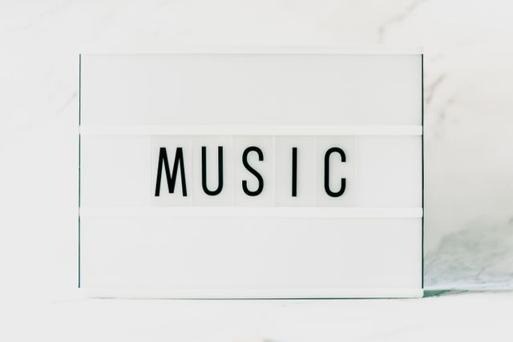
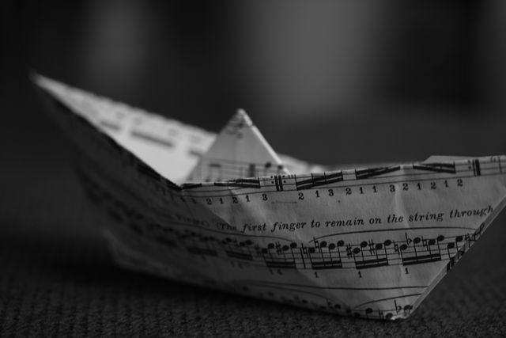

🎧 Music 🎵

Photo by Image Hunter from Pexels: Close up of a light box with a word music in the middle

Photo by Joachim Schnürle from Pexels: Monochrome photo of a paper boat
🎶Music🎼- Music has always been one of the impact that bond humans together to connect in our culture. Growing up in these times I loved how everyone embrace all types of music. I remember my playlist going from R&B and Soul, Country, reggae/dancehall, Pop, rock/metal, Rap & Hiphop to reggaeton. Remember the days waking up from school or work and watching your favorite music videos on tv shows such as TRL and 106 & Park. Watching your favorite artists perform on Showtime At The Apollo, MTV Unplugged and Soul Train. Think back to the good days chilling with your family and friends on the couch watching people compete on Star Search, Making the Band or American Idol.
Here are some of the Popular hits during these times that had us all grooving and in the zone of music.
Late 1990s music
- TLC-No Scrubs
- Britney Spears - Baby one more time
- Smash mouth- Rockstar
- Brandy & Monica - The boy is mine
- Nsync-bye bye bye
- Spice Girls-Wannabe
- Ricky Martin-Living la vida loca
- Notorious BIG - Mo Money Mo Problems
- Cher-Believe
- Usher-You make me wanna
Early 2000s music
- Evanescense - Bring me to Life
- Aaliyah-Try again
- Nelly- Hot in here
- Vanessa Carlton- A thousand miles
- 50 Cent- In da Club
- Shakira-Whenever Wherever
- Avril Lavigne-Sk8ter Boi
- Beyonce ft Jayz- Crazy in love
- Kylie Minogue- Can't get you out of my head
- Daddy Yankee-Gasolina
Check out this great Playlist on Youtube.Throwback late 90s/Early 2000s Music Videos Youtube Playlist Let's get in the zone and listen to that old good music.
Now what kind of FUN do you want to try next?
🌇🏕️Outdoor Fun OR 🛌😴Sleepover Fun
Back to Home Page